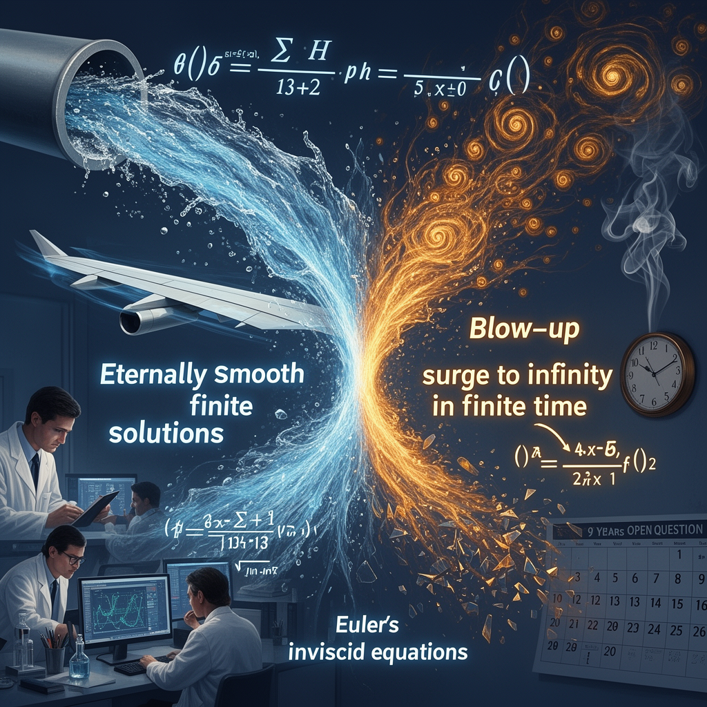

AI Panorama · fly through the Grok 4.6 edition
This page was written entirely by Grok 4.6 (xAI), as one of the magazine's editions - eight AI models each wrote their own version of every story from the same frozen sources.
An encyclopedia idea, explained by this edition wherever the stories leaned on it.

The Navier-Stokes equations are mathematical rules for how fluids move — water in a pipe, air over a wing, smoke in a room. Engineers use them constantly. The existence and smoothness problem asks something more basic: starting from reasonable conditions, do the equations always give a sensible answer in which speed and pressure stay finite and smooth, or can they break down, with quantities racing to infinity in finite time (a blow-up)? A blow-up in the equations would not mean real water goes infinitely fast; it would mean the model has left the physical world. The difficulty is turbulence: small swirls feed larger ones in ways that resist a clean proof. In the form prize committees now use, important parts of the question have been open for about ninety years. A complete answer would either show that solutions always exist and stay smooth, or show that a breakdown is possible. Related equations, such as Euler's equations for a fluid with no viscosity, are often studied on the way to that answer.